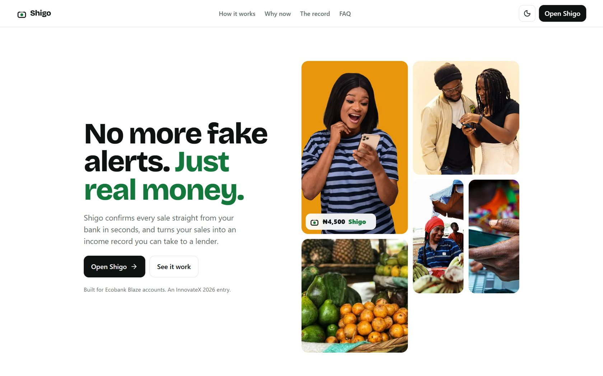
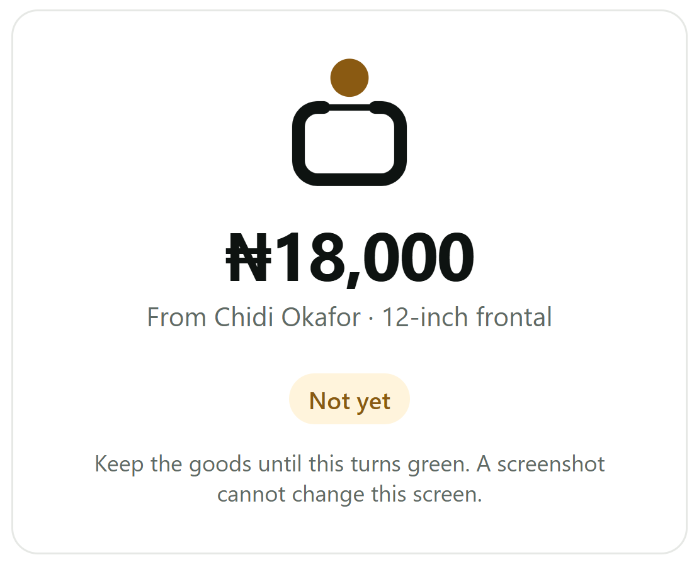
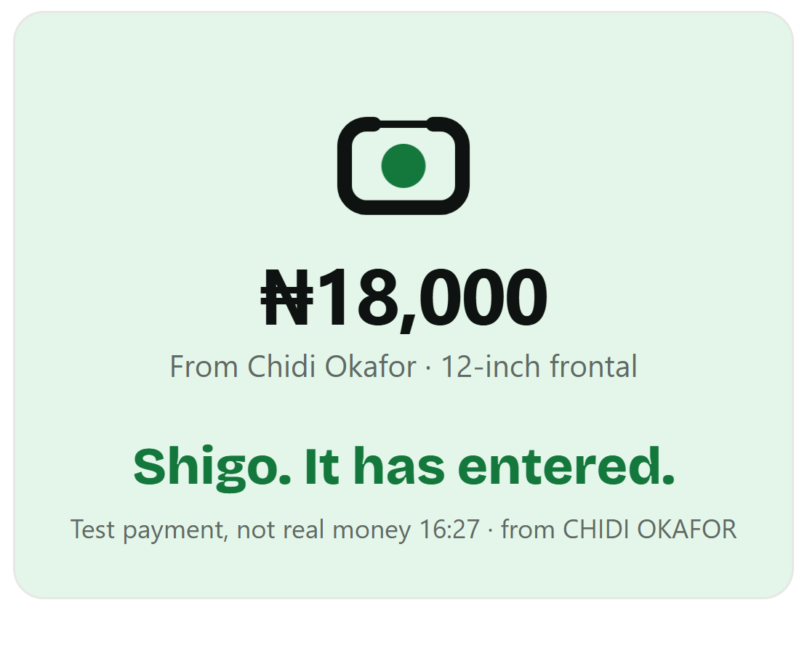

No more fake alerts. Just real money.
Bank-confirmed sales and an income record for Nigerian student sellers.

InnovateX 2026 · Track A, Inclusive Finance · [Team name], FUTO · useshigo.vercel.app
The moment
At the counter, the seller checks the buyer's screen, not her own account.
A real alert can take minutes to land. A fake receipt takes seconds to make. Either way, the goods leave with the buyer.
What she sees
A screenshot on the buyer's phone. Anyone can make one.
What she needs
Her own bank saying the money has landed. Nobody can fake that.
Shigo · InnovateX 2026
2
The crime
61,000+
people in the Telegram group of Slipcraft, a site that prints fake OPay, Kuda and PalmPay receipts for 650 points each.
Kuda confirmed the receipts impersonate its app. Faking a transfer is now a product.
Source: Sahara Reporters investigation, 20 Sep 2026
3
The damage
Fake alerts are pushing traders back to cash.
52%
had been shown a fake alert
15%
stopped taking transfers
Source: Punch survey of 330 Lagos traders, 15 Feb 2025
4
The seller
Students already run businesses on WhatsApp.
2 in 3
Nigerian students earn while in school
53%
of student businesses sell mainly on WhatsApp
Every sale is a transfer, often from a stranger, and the seller carries the risk.
Source: The Garage study of 4,000+ students at 55 institutions, via TechCabal, 16 Mar 2026
5
How it works
One screen the buyer cannot touch.
1
Seller makes the order
Amount, and the buyer's name if known. It shows amber: Not yet.
2
Buyer pays as normal
Transfer from any bank or USSD. No code to type.
3
The bank tells Shigo
The seller's bank confirms the credit. The screen turns green.

Waiting for the bank

After the credit (test payment shown)
Screens from useshigo.vercel.app
6
Live demo
Watch it turn green.
On stage, a test payment stands in for Ecobank's notification. It is labelled as a test on screen and never counted as income.
useshigo.vercel.app
7
Matching
It never guesses with money.
| When the bank says money landed | Shigo |
|---|
| One open order at that amount | Turns it green |
| Two orders at that amount, sender's name fits one | Greens that buyer's order |
| Sender's name is not the buyer the seller named | Holds it; the seller decides |
| Two orders still fit | Holds it; the seller picks |
| No order fits | Keeps it under Unmatched |
| The same bank message arrives twice | Counts it once |
Every rule is covered by an automated end-to-end test
8
The record
Every green sale becomes income history.
Each row is confirmed by the bank, not typed by the seller.
One tap exports a one-page record for a loan application. Test payments are never counted. The record is the seller's to share; the lender decides.
| Date | From | Item | Amount |
|---|
| 3 Oct | CHIDI OKAFOR | 12-inch frontal | ₦18,000 |
| 4 Oct | AMAKA EZE | Lace closure | ₦25,000 |
| 4 Oct | TUNDE BELLO | Wig revamp | ₦7,500 |
Example rows, not real sales
Shigo · InnovateX 2026
9
Why Ecobank
Built on Ecobank's own APIs, for Blaze accounts.
Notification Service
The bank's own credit message is what turns an order green. Adapter built; field names wait on the sandbox payload.
Validate Account Name
Checks the seller's name against their account at sign-in. Client built; runs once credentials are issued.
Blaze
Ecobank's account for young people. Shigo gives student sellers a daily reason to take payments into it.
Built for Ecobank Blaze accounts. Not affiliated with Ecobank.
10
Where it stands
What works today, and what is waiting.
Live at useshigo.vercel.app
- Account-name check at sign-in, every Nigerian bank
- Sign-in by one-time code
- Matching by amount and buyer name; held money
- Green screen within about 2 seconds of the credit
- Income record export
- Installs on Android and iPhone
Waiting on
- Ecobank sandbox access and the Notification payload (asked 27 Sep)
- SMS sender approval, so codes arrive by text
- Pilot with 10 sellers
Until Ecobank access arrives, account names are checked through Paystack
11
Next
Prove it with real sellers.
October
Campus pilot
10 student sellers at FUTO use Shigo for every order for 7 days.
[__] orders · [__] green · [__] held
After the finale
Android companion
For sellers paid into OPay or Moniepoint: reads the bank app's alert on the seller's own phone, never the buyer's.
After the finale
Pidgin first
The same plain screens in Pidgin, then Hausa, Igbo and Yoruba.
Shigo · InnovateX 2026
12
Our ask
Three things from Ecobank.
1
Sandbox, then UAT, access to the Notification Service and Validate Account Name
2
A pilot with Blaze student sellers on one campus
3
A conversation on whether a bank-confirmed sales record can count as income evidence for Blaze customers
Team: Iwu Austin-Chris Chukwudi, [role] · [Name], [role] · [Name], [role] · [Name], [role] · FUTO
useshigo.vercel.app · github.com/AustinChris1/shigo
13